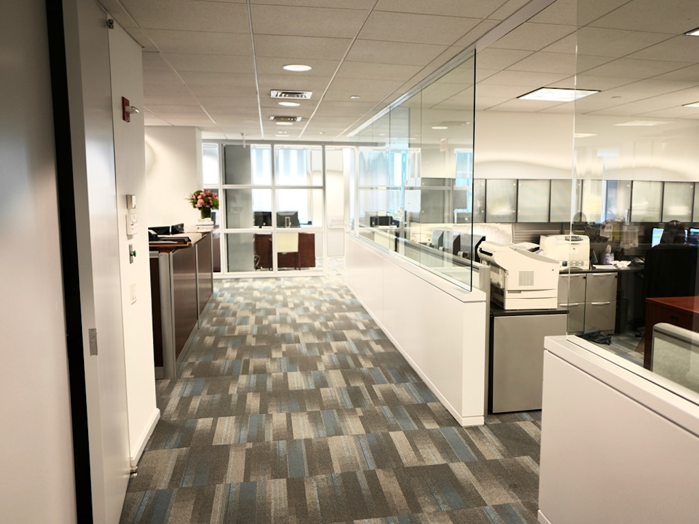
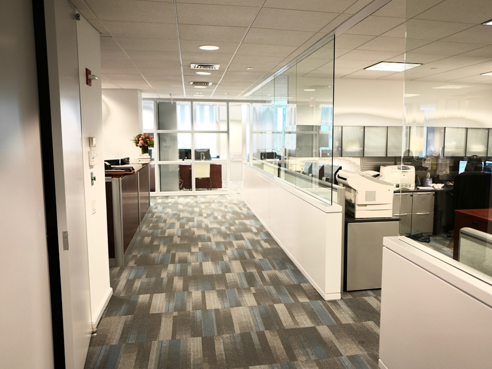
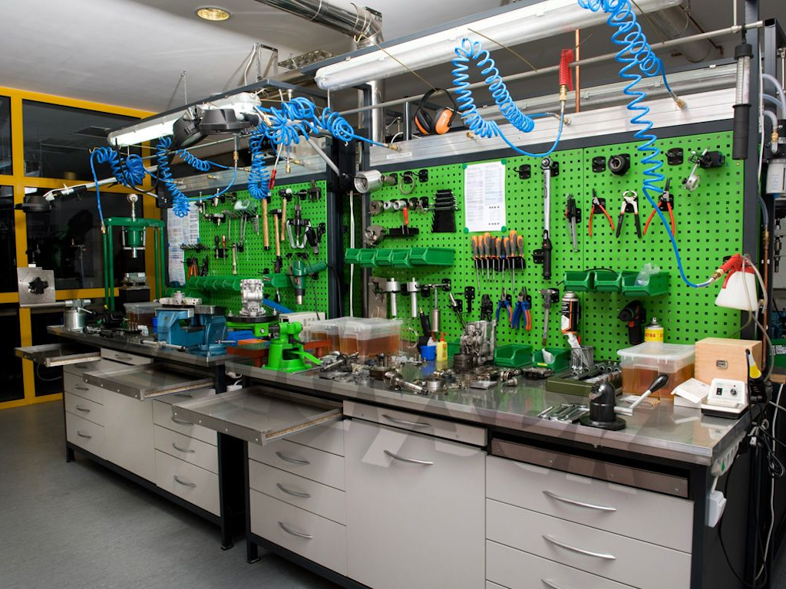
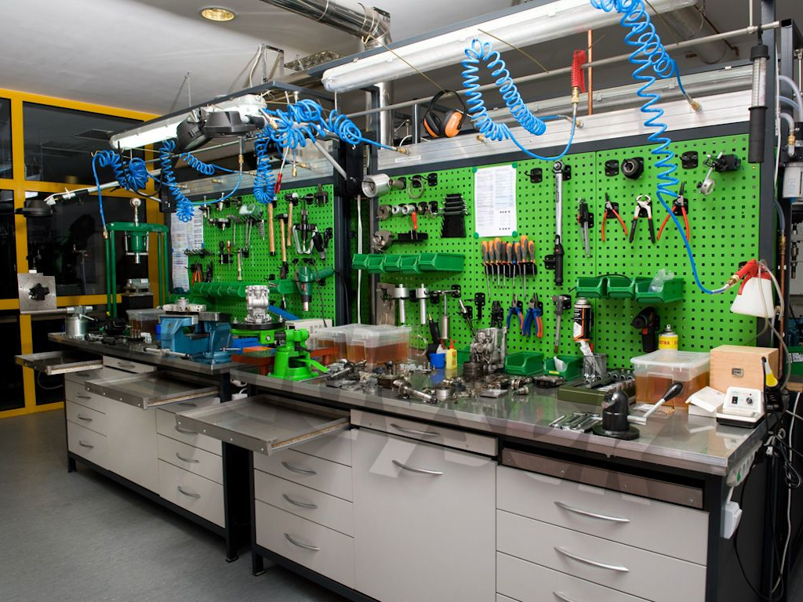

MultiPath: Make I.T. work for you.
MultiPath I.T. Services
Specialized focus on the I.T. needs of your small business:
Before you hair catches on fire, call us.

Who We Are
We are enthusiasts of technology and drivers of collaboration. Business is on the line, and you rely heavily on your computers, network, and telephones for the continued success of your small business. You need your communications to be reflect your company: reliable, consistent, and nimble.
Our range of services is as broad as your needs, allowing you the flexibility of a larger, corporate I.T. staff without the expense of maintaining an on-site presence. Through virtualization and resource sharing, we can minimize the costs and footprint of your I.T. hardware and staffing requirements. Our flexible contracts allow us to be available when you need.
 

 


How We Can Help You
We can offer as little or as much service as your small business requires. Our teams can provide you one-time and on-going quarterly services, based on your needs and budget. Our services include basic call center services, on-site deskside support, audio-visual and network cabling, server management, and web site maintenance of your provided content.